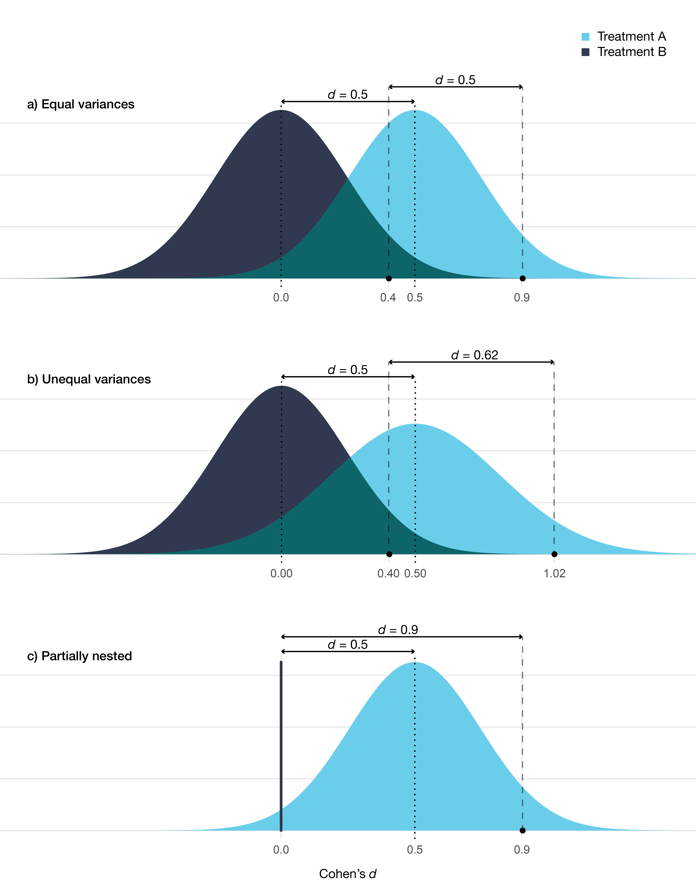

7 Discussion
“Null hypothesis testing of correlational predictions from weak substantive theories in soft psychology is subject to the influence of ten obfuscating factors whose effects are usually (1) sizeable, (2) opposed, (3) variable, and (4) unknown. The net epistemic effect of these ten obfuscating influences is that the usual research literature review is well nigh uninterpretable. Major changes in graduate education, conduct of research, and editorial policy are proposed.”
Paul E. Meehl (1990)
This discussion will start with issues more specifically related to gambling disorder interventions, and then move on to the broader topics related to psychotherapy research in general.
7.1 Helping CSOs and Problem Gamblers
Being a CSO of a problem gambler is not an easy situation, and evaluating interventions aimed towards CSOs is important. However, evaluating such interventions was challenging, and there are several aspects that deserve further scrutiny.
7.1.1 Choice of Outcome
The primary outcome in the trial was the Inventory of Consequences Scale for the Gambler and CSO (ICS). It consists of three sub-scales intended to measure: 1) the CSO’s emotional consequences, 2) the CSO’s behavioral consequences, and 3) consequences for the gambler. One could rightly ask if this is the most relevant primary outcome and that, in theory, treatment-entry is more important. However, there are several issues with treatment-entry as an outcome as well. First, there is a lack of treatment options which might lead to an underestimation of the effect of the intervention. Second, just entering treatment does not mean that the gambling problem has gone away, and even for patients that finish the treatment, their situation might not improve much. Thus, using treatment-entry as an outcome could overestimate the actual benefits of the intervention. Third, the CSOs might benefit even without the gambler entering treatment; for instance, CSOs might be successful in influencing the problem gambler to quit or at least reduce the negative consequences caused by gambling, without the gambler having to enter treatment.
Using a scale such as the ICS to try to capture different dimensions of the gambling harms is not a bad idea. The problem with the ICS scale, however, is that it has unclear validity. We do not know if it captures a change in the consequences caused by problem gambling, and we do not know how to interpret the scores. Moreover, all items are weighted the same, but it seems highly unlikely that all consequences are equal and that we should put more weight on others.
It is also possible that the meaning of some of the items varies for different subgroups (i.e., lack of measurement invariance). For instance, the items’ meaning might differ for parents and partners, or for CSOs that live in the same household as the gambler versus those who live apart. A similar concern is if the intervention actually impacts how the CSOs perceives the questions. Part of the intervention is psychoeducation about gambling problems. Hence, it is possible that the relationship between the construct and the measure change over time due to the CSOs learning more about gambling problems. This raises the question: does a 10-point difference mean the same at baseline and at posttest for the treated versus the control participants?
7.1.2 Choice of Comparator
As I discuss in the background, the waitlist control has received much criticism. However, considering the lack of previous research, the use of a waitlist control in Study IV can be defended in this trial. Moreover, the person with the problem gambling is potentially blinded as they need not know about the CSO’s participation in the trial. As we discuss in the paper, this could lead to a difference in the outcomes related to the CSO and the gambler. However, it is still true that the comparator does not control for non-specific effects. The larger effect on the CSO’s emotional well-being might be entirely caused by the telephone contact and the CSO’s relation to the counselor. For instance, the measures of adherence could just be a proxy for the amount of time talking or messaging with the counselor.
7.1.3 Feasibility
By looking at the usage data of the online program, we can conclude that the uptake varies substantially. The written feedback indicates that there is a group of CSOs who find this type of intervention meaningful and who would recommend it. In many ways, low adherence is understandable. The CSO’s are not the one engaging in the problematic behavior. Working through a program over ten weeks (partly by themselves) requires a lot of motivation, probably more than usual compared to, for instance, ICBT for social phobia or depression. The CSO has to deal with the gambler owing them money and not paying for their shared expenses, in addition, it might be hard to even notice a change in the gambling behavior if the gambler tries to conceal it. If they also work full-time and have young children, it is understandable why it might be hard to find the time and motivation to work on an online program for “someone else’s” problems.
Still, some CSOs did adhere to the program, and the dose-response analysis indicated a beneficial effect. More research is needed to investigate the causal effect of sticking with the program. But it is possible that the treatment effect is clinically relevant for the participants who are motivated and actually adhere to the program. Our clinical impression during the study was that the group of participants is very heterogeneous, some were parents to gamblers living in another town, and some were spouses living with the gambler—two completely different situations.
The choice of outcome questionnaires might have negatively impacted missing data. If it feels like you are just guessing, it might not seem meaningful to return the 12-month follow-up.
7.1.4 What’s the Mechanism?
The main idea behind the intervention was to first help the CSOs by focusing on their own needs via a type of behavioral activation. Then arrange for rewarding activities they could to together with the gambler. These shared activities were thought to naturally bring the gambler and CSO closer together, and introduce gambling-free activities to the gambler. After those core activities had been established, we wanted the CSO to practice how to communicate with the gambler about the gambling problem. We tried to place rather little emphasis on the CSO being able to identify the actual gambling behavior.
It seems likely that many of the CSOs spent very little time practicing the skills intended towards influencing the gambler. Personally, I think these skills would require a lot of practice, preferably by role-playing different scenarios with the therapist. It is not easy to change the dynamics in a dyad when emotions run hot. However, anecdotally, there were some CSOs who did practice these skills thoroughly and reported that they successfully improved how they communicate about gambling.
Lastly, a difficult question is: were the CSO’s emotional problems caused by the problem gambling? Most research on this topic is correlational. This question is related to the potential measurement issues discussed earlier, one can rightfully ask if the changes in the CSO’s emotional consequences (ICS) and in the depression (PHQ-9) symptoms and anxiety (GAD-7) reflects a reduction in “gambling harms” and increased cooping—or is the mechanisms similar to other ICBT interventions aimed at reducing depression and anxiety? It is possible that we would have seen similar results on these outcomes if the CSOs had telephone contact with a counselor that validated them, provided some psychoeducation about gambling, and then motivated them to focus less on the gambling and instead do “rewarding and fun activities”.
Clearly, these causal mechanisms will be heterogeneous. Some CSOs showed very little emotional distress and did not suffer financial consequences—others were more directly affected. It is possible that adherence and maybe outcomes could be improved if the intervention is more tailored toward the CSOs specific situation. The original CRAFT approach is more of a “smörgåsbord” with a more flexible treatment-planning than our online intervention.
7.1.5 Agreement Between the CSO and Gambler
Study III provided some evidence that it is possible for CSOs and gamblers to show a decent level of agreement in regards to gambling losses. It is likely that CSOs who cohabit and have shared expenses have a better grasp on the losses—at least large relative changes in losses. If the gambler reduces or quits their gambling, the CSO could notice that the gambler can pay expenses and needs to borrow less money. Still, we know that problem gamblers have managed to hide large losses for a long time from their loved ones.
The obvious difference between the sample of gamblers and CSOs in Study III and Study IV affect the transportability of the findings. The gamblers in Study III were willing to begin treatment together with their CSOs, whereas the problem gamblers in Study IV were treatment-refusing, making it plausible that they were actively trying to hide their losses, i.e., the agreement would probably be even lower in such a sample. Currently, there has been no research on the validity of collateral reports in such a sample.
Moreover, we only investigated agreement using the baseline reports, since we wanted to avoid that the reports were influenced by the treatment. From a treatment point-of-view, it would be interesting to see if agreement increases over time for dyads receiving behavioral couples therapy versus CBT. However, the large number of missing observations will make such an analysis extremely hard to interpret.
7.1.6 Clinical Implications
The results in Study IV implies that CSOs can learn to cope better with the problem gambling. However, we still know very little about how to help CSOs influence the actual problem gambling or treatment-seeking behavior. Moreover, it is unclear if an internet intervention is the preferred mode of delivery among CSOs. However, access to other options will likely not become available nationwide in the foreseeable future. A reduced version of our 10-week program might be worth evaluating in future studies.
7.2 Modeling Gambling Losses
It is hard to image that gambling losses fulfill the typical LMM assumptions, i.e., normally distributed residuals with a constant variance, an additive effect of treatment, and multivariate normal random effects. The longitudinal two-part model proposed in Study II is a priori much more plausible. The model can easily capture the fact that some will completely stop gambling, and some will continue to gamble heavily. However, many challenges remain when it comes to analyzing gambling losses as a treatment outcome. Some of the issues are:
- Clinical significance: It is hard to define what a clinically significant improvement would be. For some, a reduction in losses of 100 SEK per day would be clinically relevant; for others, it would make no difference. Although we could use the relative units an say that a 20% reduction is clinically relevant, it is not clear that this is any more clinically meaningful.
- Recovery: A related issue is to try to define “recovery” from problem gambling. Although, I consider the focus on “recovery” as a treatment outcome, an unnecessary dichotomization of a continuous outcome (gambling losses). Undoubtedly, a problem gambler will still have residual problems even if they completely stop gambling, such as financial problems, gambling urges, and relationship problems. However, it seems natural that the primary aim of a gambling intervention should be to reduce the problematic gambling. Thus, when evaluating the efficacy of a treatment, what matters is if the treatment increases the likelihood of staying abstinent, or lead to a reduction in the gambling losses. In clinical practice, other significant comorbidities that patients might suffer from can likely be targeted by combining treatments.
- Dropout: Some participants will drop out because they feel they are doing fine and do not need any more treatment. For these participants, dropout might depend on the observed values (the MAR assumption). For others, they might drop out because they relapse, or because they feel like the treatment is not helping or they might not like their therapist and feel like they do not understand their gambling problem. Whatever the reason is, the dropout process is likely to be a mix of MAR and MNAR related mechanisms. Dropout will likely continue to be a major challenge in gambling studies. What we can improve is to think harder about appropriate sensitivity analyses. We can also include questions if the participant think they will drop out before the next visit—information that could make the MAR assumption more plausible.
- Long term effects: We know that study participants tend to stop gambling once they enter treatment. Naturally, this change can not be caused by the contents of the treatment and should be seen as an effect of the participant’s resolve to change their behavior. Deciding to enter treatment might be enough to keep them motivated to abstain from gambling during the treatment period. Thus, the real treatment effect would be the impact on the long-term outcomes, say, 5 to 10 years later. Clearly, the effect of randomization will be long broken by that time, and dropout will be an even greater issue. Still, preventing relapse, in the long run, might be where differences between treatments would show up.
In addition to the issues just listed, it is not entirely clear how reliable retrospective reports of gambling losses are. However, more and more gambling is tracked, and gamblers can see how great their losses are. Thus, EMA or diary-type reports can be even further improved by the aid of the tracked gambling data. The gambling field might be one of the few clinical fields were the possibility exists of using behavioral tracking to receive ecologically valid data on the problem behavior. For some type of studies, it is even possible to collaborate with the gambling industry and have access to transactional-level data. However, such collaborations are not uncontroversial; the gambling industry does not always share the agenda of the researchers.
Lastly, one of the major challenges in Study II is how to disseminate the proposed model. I doubt it can be fit using SPSS, and even in R or SAS, it is not straight-forward and most researchers might need to consult an expert. This is a major drawback for the dissemination of a method.
7.3 Therapist Effects
Having discussed specific issues related to gambling studies, I will now focus on the broader issue of therapist effects in treatment studies.
7.3.1 Therapists, Do They Matter?
Little is known about how strong the therapist effect is, mostly because researchers continue to use statistical models that blatantly ignore the existence of therapists. Naturally, it is likely that the variance at the therapist level is much smaller compared to the variance between patients. However, as we showed in Study I, the consequences of ignoring this variance can have large consequences for the statistical tests.
There are many reasons why therapists might differ in their overall success. Some might just have more skill on the relevant variables—whether that is their ability to create expectations and alliance, or their adhererence to the specific ingredients of the treatment. Some therapists might just underperform during the study; things could happen in their private lives that affect their work, or there might be a problem at the organizational level creating unrealistic working conditions.
It is important to note that therapist effects do not make the treatment effect invalid. If the therapists in each arm are comparable, then the treatment effect will not be biased; it will simply shift the whole distribution of therapists giving the treatment. Thus, the difference between therapists at the 95th percentile in either treatment group is the same as for therapists at the median in either treatment group. However, if the variances are heterogeneous, i.e., different in each arm, then the therapists will be a source of treatment effect heterogeneity. This is also the case for a partially nested design, where, indeed, the treatment effect is larger for a therapist at the 95th percentile compared to the expected outcome in the control group. Figure 7.1 illustrate these three different scenarios.

Figure 7.1: Distribution of therapists’ expected outcome for two different treatments. In a) the variance is equal in both treatments (at posttest ICC = 0.05), in b) there is a larger variance in treatment A (at posttest ICC = 0.05 vs 0.08), in c) treatment B is a no-treatment control condition (at posttest ICC = 0.05 in treatment A). Comparison between treatments are shown at the median and at the 95th percentile.
An important question to ask is: Why do these distributions differ? In a nested design, the therapists and treatments are confounded. The therapists giving treatment A could be successful because they are more competent, which would inflate the estimated treatment effect. This could be caused by the fact that a treatment that is more popular and seen as more evidence-based might attract more ambitious and skilled therapists as they know that this will improve their work opportunities. The relationship could also be the reverse, i.e., there is no real difference between the therapists’ giving either treatment. In this case, the overall difference mostly reflects the effect of the specific treatment. Moreover, it is possible that there is no overall therapist effect, in the sense that therapists would perform well using any treatment due to, for instance, their mastery of common factors. In a nested design, it is not possible to partition out if some of the variance is caused by a therapist \(\times\) treatment interaction. It is possible that all of the variance stems from an interaction between therapist characteristics and the treatment—and that a “super therapist” only outperforms their peers when delivering their preferred treatment. Clearly, all of this has a bearing on whether therapists or treatments are more important.
One could also look at Figure 7.1 and note that the overlap is substantial. There will be therapists from the less beneficial treatment B that outperforms therapists from treatment A. Based on such reasoning, some would claim that therapists are more important than the treatment provided. However, it makes little sense to compare therapists at different percentiles—and as noted earlier we do not know if it is the therapists causing the treatment effects or if it is the treatment effects causing the difference between therapists. However, if the distribution of the expected outcomes is valid (i.e., it approximates the empirical distribution of the real therapists), then all of these therapists will treat patients. Thus at the population level, our best guess would be to pick treatment A, either because the treatment is better or because the therapists delivering the treatment tend to be better. Clearly, if I was a patient and I had access to this information, my best option would be to pick one of the top therapists giving treatment A. Unfortunately, I do not have access to this information, and no one else has, so again, my best option would be to pick a therapist from treatment A.
7.3.2 Fixed Versus Random Effects Again
The discussion regarding if therapists should be viewed as a fixed or random effect is somewhat strange. The argument for random effects (varying effects) is about generalizability. The confidence intervals will be wider for the treatment effect, as we assume therapists are sampled from a distribution. This makes sense if we are thinking about effectiveness. However, if we are primarily concerned with estimating the efficacy of a treatment, then conditioning on the therapists in the study makes sense. A problem is that psychotherapy trials do not really have different phases, in the same way that pharmacological trials do. It would make sense to use a fixed effects approach in the early phases, where power is a major concern and where a type II error could lead to abandoning research on a treatment that is indeed efficacious. Before dissemination to the general public, larger studies could be performed where therapists are a random factor.
A third option is to perform a fixed effects analysis but adjust the standard errors, a method more common in econometrics. There is no gain in power in doing this, but it can be an attractive option if there is a concern about the validity of the random effects (for instance, endogeneity concerns).
7.3.3 Identifying Factors That Explain Therapist Variance
If we can identify variables that explain some of the variance between therapists, such as competence or experience, then measuring and including these variables in our models should increase the model’s precision by reducing the between-therapist variance. Considering that most studies completely ignore therapist effects, this means that very few good markers exist. Such problems can easily be avoided by publishing de-identified data. Instead, thousands of studies have been performed that contained useful information that could have been used to design better studies—unfortunately, one can guess that most of the data sets are lost forever.
7.4 Psychotherapy Research—Looking Forward
After having spent most of this thesis looking at the bad parts of psychotherapy research, I will end this discussion by focusing on how things can be improved in the future.
7.4.1 Methods Issues and Dissemination
A wide-spread problem in research is that calls of concern from methodologists continue to be ignored. For example, the consequences of ignoring therapist effects have been known for a long time, with little impact on the way investigators analyze and report their trials. It is clear that just writing method papers is not enough to improve our field. Most researchers in clinical psychology both lack strong quantitative training, programming knowledge or have the prerequisite mathematical knowledge that they would need to apply or evaluate many method papers. With the challenges often faced in clinical psychology, it should not be surprising that clinical researchers struggle with using modern computational tools. However, I do not think that the solution is to focus solely on the individual researcher’s quantitative training. It is not reasonable to expect clinical researchers to become quantitative and clinical experts simultaneously. The issues we are facing need to be dealt with by reforming how we organize, reward, and fund research. With that being said, I do think that the overall quantitative knowledge needs to be improved. Not so that everyone should be able to code their own custom analyses, but rather so that clinical investigators can ask better questions and better evaluate the limitations and inferences in their trials.
The problem of disseminating quantitative methods shares many similarities with the research-to-practice gap in healthcare, and several lessons from implementation sciences can most likely apply to the research-to-practice gap in quantitative methods (King et al. 2019).
A specific issue that pertains to this thesis is how to disseminate method papers best. Even the applied quantitative papers tend to be too technical for the typical psychotherapy researcher. In many ways, quantitative scholars face a user interface (UI) and user experience (UX) design problem. If a quantitative researcher wants to publish a new method (a new “product”) that researchers should use, then just publishing a method paper, tend to lead to really sub-par UI and UX. Very few researchers will use a method unless it is packaged in a user-friendly way, and unless the product includes the features that match their needs. In my work, I have at least tried to go beyond just publishing papers. I have tried to include more visual material and more user-friendly alternatives. For instance, is my belief that many concepts can be explained better using interactive visualizations (e.g., https://rpsychologist.com/d3/CI/), than just static pictures or using formulas. For Study I, I created my R package powerlmm, which can perform everything mentioned in the article (and more), and I included a web application (a Shiny app) where the core features have a more user-friendly graphical interface.
7.4.2 Causal Inference, Learning to Let Go of Experiments
Psychotherapy investigators tend to be most familiar with one of the most basic experiments: the parallel-group randomized trial, where the only experimental manipulation is the offering of recieving treatment or not. Often we fail to recognize that many of the questions we are interested in are not experimentally manipulated, such as process measures, per-protocol effects, or dose-response relationships. Which can lead to investigators choosing analyses that are so naive that no one would have faith in the results if all assumption were explicitly stated. Going forward we should use our substantive knowledge and clinical experience together with modern causal inference methods to try to discover causal effects with more realistic models—instead of wasting our efforts on unrealistic mediation or predictive models.
We could also focus on basic science experiments to try to identify potential variables to target in our treatments. For the reasons covered in Section 2.2.5, I am personally not that optimistic that such an approach will substantially inform the practice of psychotherapy. There is a concern that more novel and hyped experimental findings will lead to trials with little hope of improving clinical outcomes, leading to an unnecessary waste of research resources (Cristea and Florian 2019).
7.4.3 Predictive Modeling Without Buzzwords
It is understandable that psychotherapy researchers, like so many others, have a hard time resisting the hype of machine learning or “artificial intelligence” as a way of improving treatment selection, predicting who will respond to treatment, or classifying non-responders during the treatment. Indeed, labels such as “deep neural nets”, “reinforcement learning”, or “artificial intelligence” does sound more state-of-the art than “linear regression”. Unfortunately, few problems in psychotherapy research are solved by these models, and one can question the utility of models that gained their popularity in situations with a high signal-to-noise ratio, such as in pattern recognition problems, natural language processing, or building recommendation systems (i.e., “you might also be interested in product X”). Anyone who have seen a decent amount of psychotherapy data will know that our situation is quite the opposite.
I have seen several examples of both research funders and investigators that have bought the hype of machine learning, unfortunately, with little knowledge of how to appreciate what the good parts are—and how they apply to psychotherapy research. Although, one can rightfully argue that many of the “machine learning” methods that might work well for psychotherapy researchers are just “statistics”; such as cross-validation, appropriate performance measures, penalized regression, and so on.
The literature on clinical prediction models is much larger in medicine compared to psychotherapy research. Undoubtedly, a lot could be improved with regards to how prediction or classification problems are handled in psychotherapy research. The first would be to recognize what can actually be predicted (as covered in the background section). Using patients’ improvement from baseline and trying to build a model that will predict treatment response is doomed to fail. What would help is to instead build better models for predicting patients’ prognosis. It is not a surprise that, in medicine, it is with image recognition that machine learning algorithms have found their success, e.g., detecting diabetic retinopathy based on retinal photographs (Beam and Kohane 2018; Gulshan et al. 2016).
7.4.4 “We Need Less Research, Better Research, and Research Done for the Right Reasons”
Many of the issues I discuss would require changes to the way research is undertaken. Hopefully, the days of psychotherapy trials being basically a solo venture are soon gone; were one or two persons design the trial, carry out the treatment, analyze the results, and publish the results with very little transparency or oversight. Clearly, this is problematic even when investigators are conscientious and report everything transparently—no one is an expert in all of the relevant skills.4
Instead of many small trials of this type, run by a single academic investigator, what we need is large collaborations that include multiple institutions and with enough resources to create research teams and support functions to run large high-quality trials. This would allow teams to focus on: a) measurement problems before starting a trial, b) evaluate interventions in several steps, starting with single-case experimental designs and where patients and clinicians can provide feedback on the contents of interventions and if relevant outcomes are captured, c) include outcome measures that are actually validated specifically for the problem being investigated, d) letting clinicians, methodologists, psychometricians, and statisticians work together from the start both to formulate relevant questions and methods to answer them. Cuijpers, Reijnders, and Huibers (2018) reasoned similarly:
“It is as if we have been in the pilot phase of research for five decades without being able to dig deeper. If we want to take a step forward, we need to conduct research that goes beyond examining, on the one hand, simple correlational associations between specific and common factors and, on the other, outcomes … There are no easy solutions, and such research will require considerable resources. However, we have invested resources in this research for five decades, and if we could put only part of these resources toward making a coordinated effort to examine mechanisms of change, it would certainly become feasible” (p. 18)
Moreover, in order to realize this scientific utopia, researchers would need to publish less in order to have the time to produce reliable research that is carefully thought through and carried out. Obviously, this would require changing the incentive structures in science and how researchers are promoted and recruited—a pretty daunting task.
7.4.5 Embrace Open Science
In order to create a cumulative and transparent research field data and scripts need to be open, and psychotherapy researchers need to embrace open science practices. It is a clear research waste that so much data on psychotherapy outcomes and processes are unavailable, and perhaps, permanently lost. Open data and scripts also enable science to be self-correcting; currently, it is close to impossible to check claims made in published trials.
Science is not open if only those with the appropriate software licenses can run our code—open science is best done using open software. Naturally, treatment manuals and worksheets should be published using a permissive license so that others are free to use and adapt the materials. These are simple steps that would improve the trustworthiness of psychotherapy research substantively. With most of these items included in the most recent CONSORT statement for social and psychological interventions (CONSORT-SPI; Grant et al. 2018), maybe the situation will improve. For instance, item 12a states:
“To facilitate full reproducibility, authors should report software used to run analyses and provide the exact statistical code” (p. 11)
and item 17a:
“As part of the growing open-science movement, triallists are increasingly expected to maintain their datasets, linked via trial registrations and posted in trusted online repositories … to facilitate reproducibility of reported analyses and future secondary data analyses” (p. 13)
Hopefully, psychotherapy researchers or funders recognize the importance of these items.
7.4.6 Is it Time to Regulate Psychotherapy Research?
It is quite strange that psychotherapies (or “psychological treatments”) can be offered by the Swedish (and other) healthcare systems without any specific regulation of the psychotherapy research which is used to guide what treatments are offered.
It should be evident that the reporting of psychotherapy trials in academic journals is a sub-optimal way of ensuring quality. When “psychological treatments” are included in the healthcare system and provided by licensed psychologists, the evidence needs to be evaluated independently by a responsible governing body. We cannot rely on simply the published literature and base healthcare recommendations on systematic reviews of this literature. A better approach would be to adopt the system for introducing new medicines on the market where there is a governing body and specific regulation, such as the European Medicine Agency and the Swedish Läkemedelsverket. In order to reclaim trust in the evaluation of psychotherapy interventions, trial data need to be independently verified, and regulatory documents should detail how the research should be conducted and how good clinical practice is ensured. After a psychotherapy is shown to be effective, its implementation needs to be monitored, and guidelines are needed for how to train therapists and what competencies are required.
7.5 Concluding Remarks
Undoubtedly, the challenges faced by psychotherapy researchers are monumental. It is easy to sound negative when focusing mostly on research issues. Hopefully, improvements to psychotherapy research will follow, and that these improvements will improve clinical practice and reduce the mental health burden in general.
No, not even Paul Meehl.↩